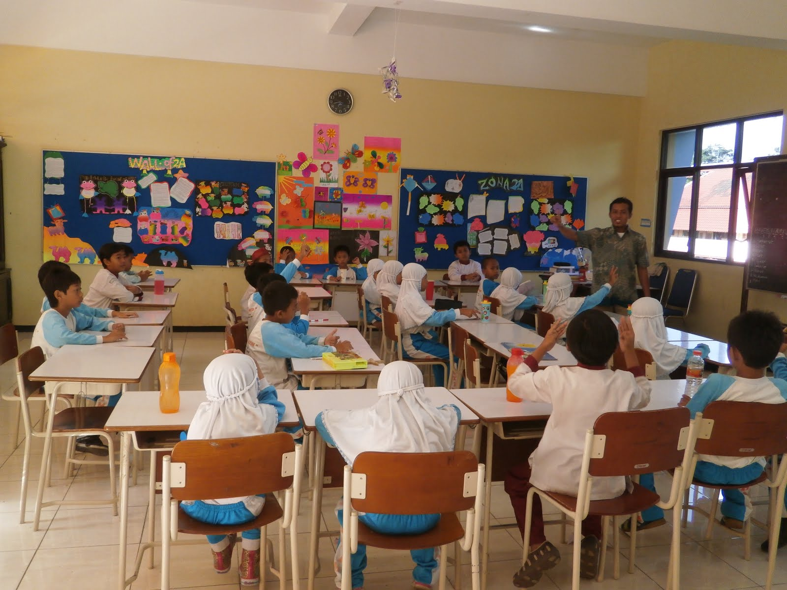
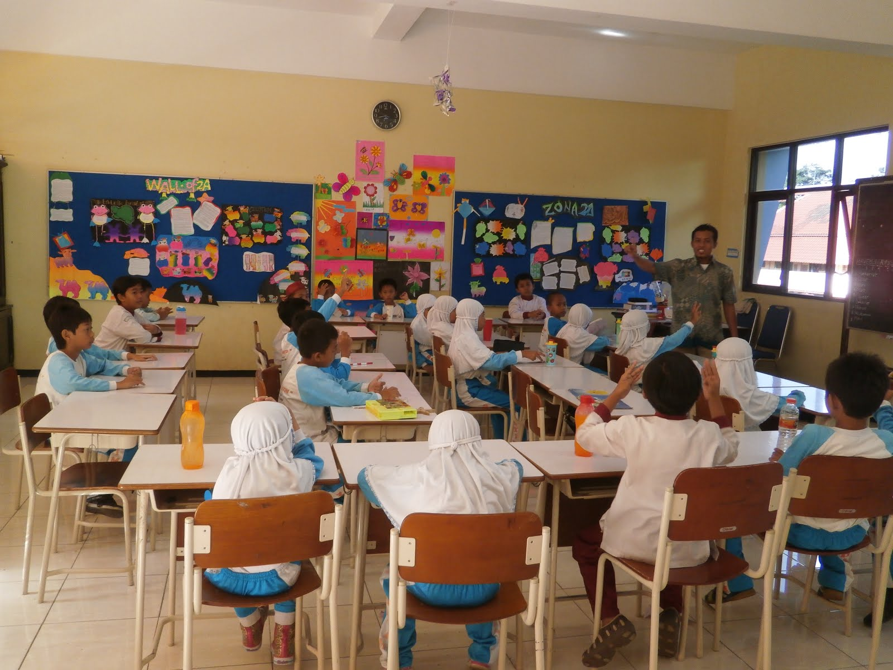
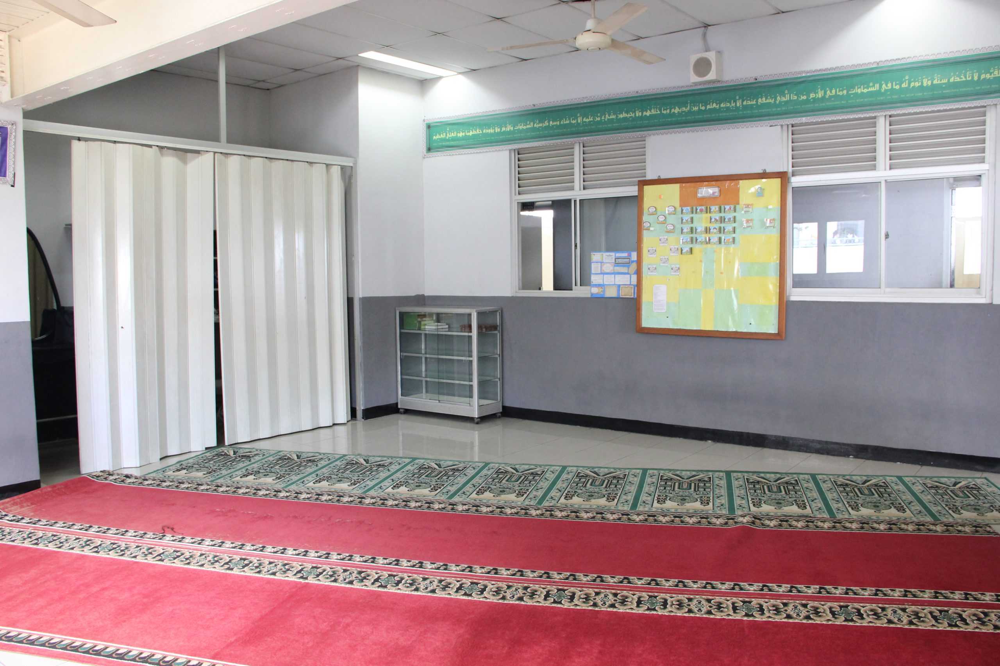
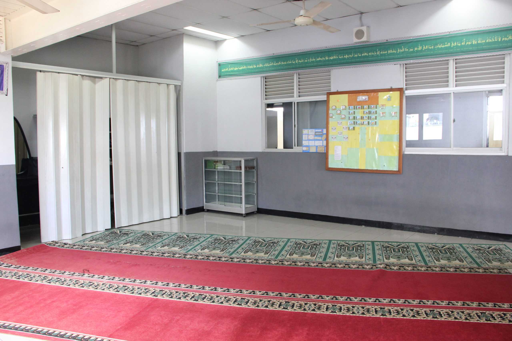
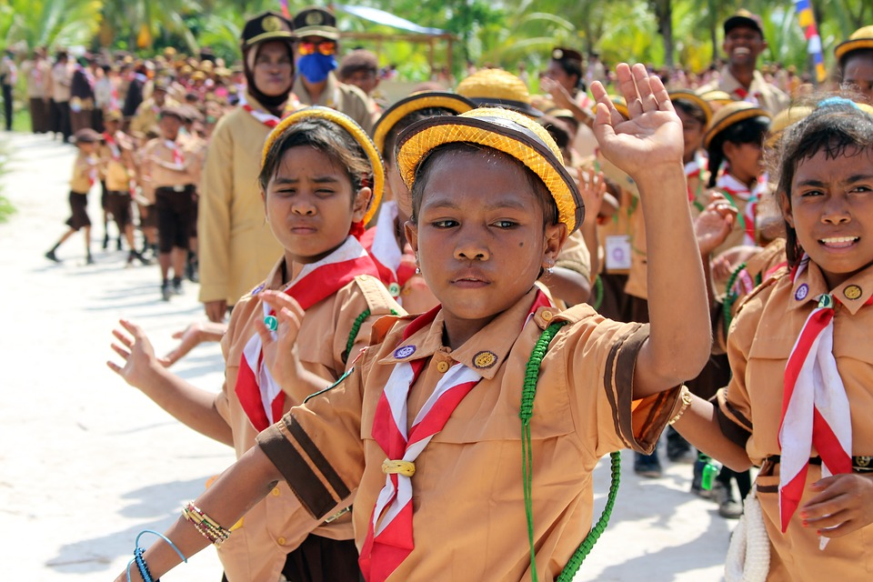
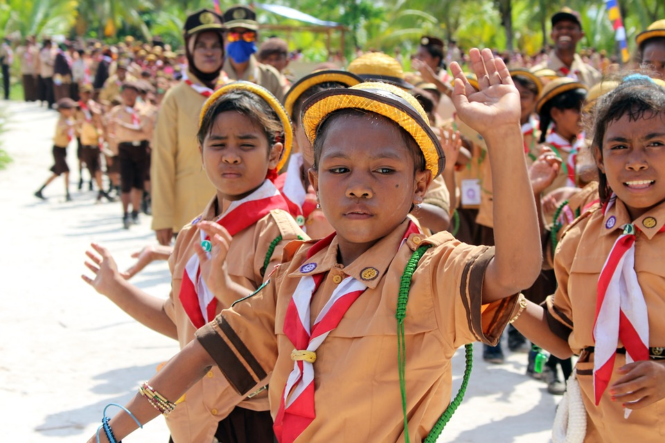
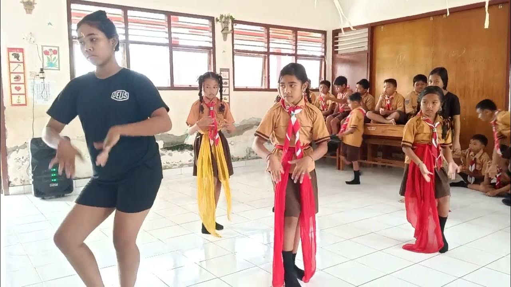
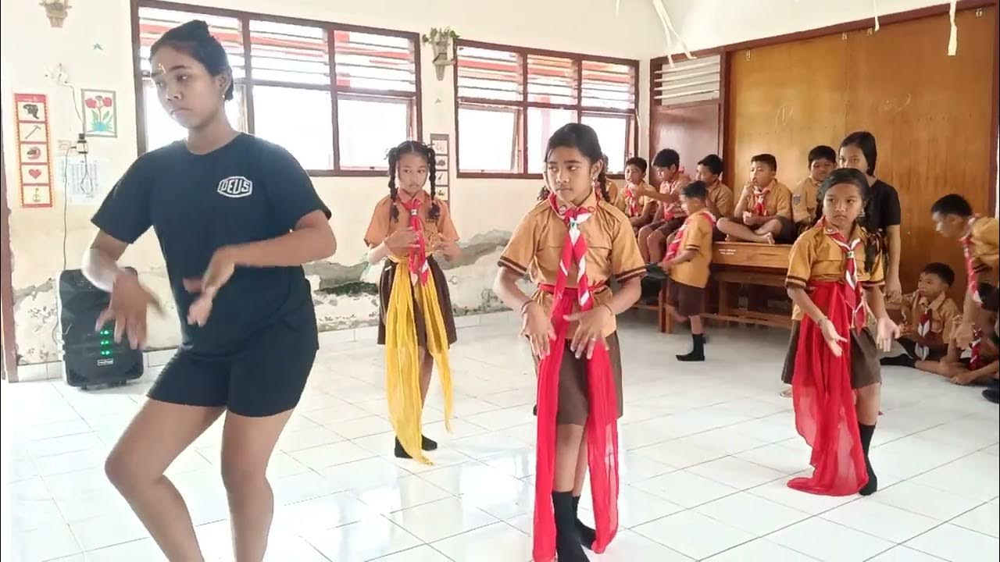

Testimoni Orang Tua
Bapak Andi, Orang Tua Siswa Kelas 3
“Kami sangat senang melihat perkembangan anak kami sejak bergabung dengan SDN Ceria Bangsa. Guru-gurunya sangat sabar dan penuh perhatian, sehingga anak kami merasa nyaman dan semangat bersekolah setiap hari. Selain itu, sekolah ini juga memberikan banyak kegiatan yang mengasah kreativitas dan keberanian anak-anak, seperti lomba-lomba dan kegiatan ekstrakurikuler.”
Ibu Siti, Wali Murid Siswa Kelas 5
“Di SDN Ceria Bangsa, saya merasa anak saya mendapatkan pendidikan yang seimbang antara akademik dan karakter. Anak saya tidak hanya belajar untuk berprestasi, tetapi juga diajarkan nilai-nilai kedisiplinan, kejujuran, dan tanggung jawab. Saya bangga dengan lingkungan sekolah yang sangat mendukung ini.”
Bapak Heru, Orang Tua Siswa Kelas 2
“Kami berterima kasih kepada para guru dan staf di SDN Ceria Bangsa yang selalu terbuka dengan masukan dari orang tua. Kami merasa seperti keluarga besar di sini, dengan komunikasi yang baik antara guru, orang tua, dan pihak sekolah. Lingkungan sekolahnya juga bersih dan nyaman, sangat kondusif untuk belajar.”
Ibu Maya, Wali Murid Siswa Kelas 4
“Anak saya mengalami peningkatan yang luar biasa dalam hal percaya diri dan kemandirian sejak bersekolah di SDN Ceria Bangsa. Guru-guru di sini sangat mendukung dan memberikan perhatian khusus sesuai kebutuhan anak-anak. Kami merasa sangat beruntung bisa menjadi bagian dari SDN Ceria Bangsa.”
Pak Budi, Orang Tua Siswa Kelas 6
“SDN Ceria Bangsa memberikan pendidikan yang berkualitas dan menciptakan lingkungan belajar yang aman dan menyenangkan. Anak saya merasa dihargai dan didukung dalam mengembangkan bakatnya, terutama di bidang sains dan olahraga. Kami sangat berterima kasih atas dedikasi para guru yang luar biasa!”

 


 



 

 
